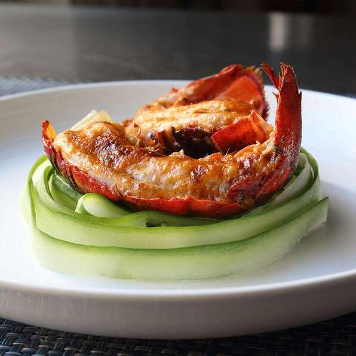

Deviled Lobster Tail

Description
These spicy lobster tails are so easy to make. Just a note on the lobster tails in supermarkets: if they're not frozen, they've been frozen and then thawed. So, bypass the 'fresh' for the frozen, which are fresher.
Ingredients
- ¼ cup mayonnaise
- 2 tablespoons chopped tarragon
- 1 tablespoon sriracha sauce
- 1 teaspoon ground paprika
- 1 teaspoon lemon juice
- ¼ teaspoon ground cayenne pepper
- 1 pinch salt
- 4 frozen lobster tails - thawed, split in half, and deveined
Steps
- Mix mayonnaise, tarragon, sriracha sauce, paprika, lemon juice, cayenne pepper, and salt together in a bowl.
- Preheat oven to 500 degrees F (260 degrees C). Set oven rack about 8 inches from the heat source and preheat the oven's broiler.
- Loosen lobster meat from the shell, leaving it attached near the tip of the tail. Place tails on a baking sheet lined with crinkled aluminum foil to help keep them in place.
- Spoon some of the mayonnaise mixture beneath the lobster meat and spread a generous amount on top.
- Broil in the preheated oven until lobster tails are browned and cooked through, 5 to 7 minutes.
Back to Home